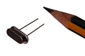

11 mm 16 MHz Crystal - XT16
Summary
Name: 11 mm 16 MHz Crystal
ID: XTAL-11-X-MZ16-01
Hex ID: XT16
WebPage: https://github.com/oomlout/oomlout-OOMP/wiki/XTAL-11-X-MZ16-01
Short URL: http://oom.lt/XT16
Revision History: https://github.com/oomlout/oomlout-OOMP/blob/master/parts/XTAL-11-X-MZ16-01/
| Type |
Size |
Color |
Description |
Index |
XTAL
Crystal |
11
11 mm |
X
|
MZ16
16 MHz |
01
|
Images

About
A 16MHz Crystal, in a commonly used through hole size.
This part is awaiting a description.
Specifications
| Info |
Value |
| Type |
Crystal |
| Size |
11 mm |
| Description |
16 MHz |
| Pitch |
4.88 mm |
| Width |
4.65 mm |
| Height |
3.5 mm |
| Length |
11.05 mm |
| Package Marking |
16.000 |
| Number of Pins |
2 |
Extra Details
Spotted a mistake, want to add more? Let us know oomp@oomlout.com
All images and resources are licensed [CC BY-SA] unless otherwise stated (ie. the datasheets)